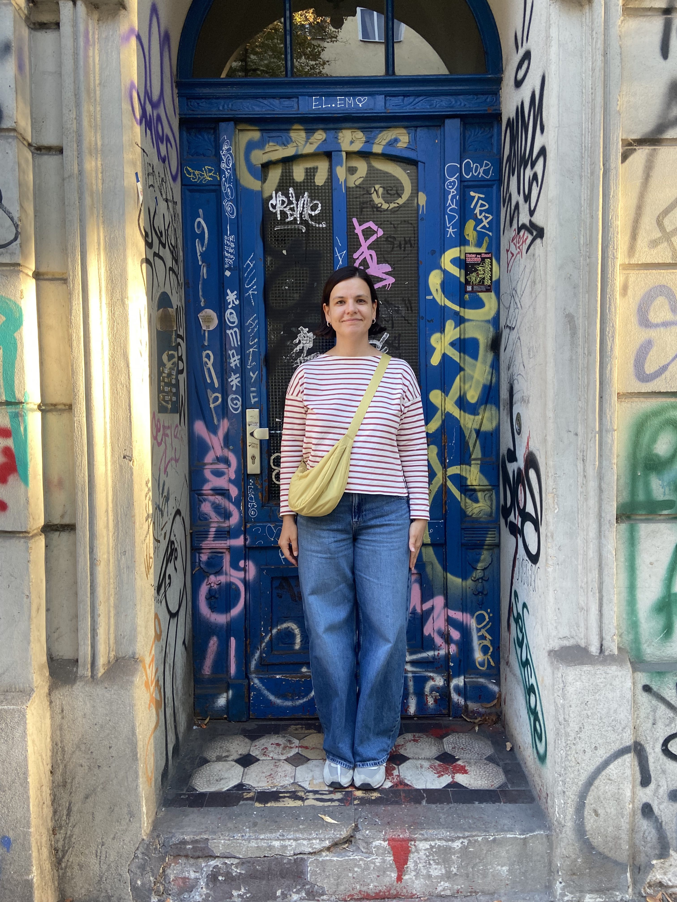

Hi there, I’m Olena.
I’m a product designer based in Berlin.
I have a master’s degree in graphic arts, but my journey into product design started in 2015 with a small UI/UX course. Later, my professional life brought me to Singapore, where I worked with different startups and businesses, helping them build digital products.
I’ve had a chance to work on products like GPay and Grab Finance, which gave me a deeper understanding of how to design complex financial experiences while keeping them simple and accessible.
Today, I’m interested in helping products create easy, meaningful workflows for their users using latest technologies. I also love climbing and read entire "In Search of Lost Time" by Marcel Proust if you need a fun fact about me.
